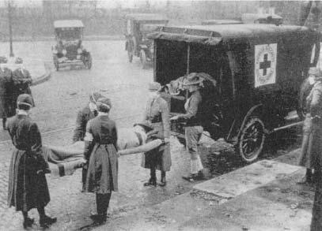
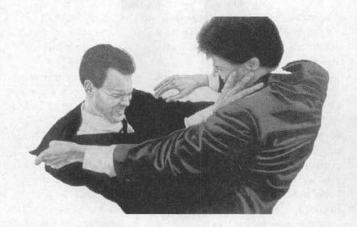

It’s two o’clock in the morning and you’re lying in bed. You have something immensely important and challenging to do that next day—a critical meeting, a presentation, an exam. You have to get a decent night’s rest, but you’re still wide awake. You try different strategies for relaxing—take deep, slow breaths, try to imagine restful mountain scenery—but instead you keep thinking that unless you fall asleep in the next minute, your career is finished. Thus you lie there, more tense by the second.
It’s two o’clock in the morning and you’re lying in bed. You have something immensely important and challenging to do that next day—a critical meeting, a presentation, an exam. You have to get a decent night’s rest, but you’re still wide awake. You try different strategies for relaxing—take deep, slow breaths, try to imagine restful mountain scenery—but instead you keep thinking that unless you fall asleep in the next minute, your career is finished. Thus you lie there, more tense by the second.
If you do this on a regular basis, somewhere around two-thirty, when you’re really getting clammy, an entirely new, disruptive chain of thought will no doubt intrude. Suddenly, amid all your other worries, you begin to contemplate that nonspecific pain you’ve been having in your side, that sense of exhaustion lately, that frequent headache. The realization hits you—I’m sick, fatally sick! Oh, why didn’t I recognize the symptoms, why did I have to deny it, why didn’t I go to the doctor?
When it’s two-thirty on those mornings, I always have a brain tumor. These are very useful for that sort of terror, because you can attribute every conceivable nonspecific symptom to a brain tumor and justify your panic. Perhaps you do, too; or maybe you lie there thinking that you have cancer, or an ulcer, or that you’ve just had a stroke.
Even though I don’t know you, I feel confident in predicting that you don’t lie there thinking, “I just know it; I have leprosy.” True? You are exceedingly unlikely to obsess about getting a serious case of dysentery if it starts pouring. And few of us lie there feeling convinced that our bodies are teeming with intestinal parasites or liver flukes.

Influenza pandemic, 1918.
Of course not. Our nights are not filled with worries about scarlet fever, malaria, or bubonic plague. Cholera doesn’t run rampant through our communities; river blindness, black water fever, and elephantiasis are third world exotica. Few female readers will die in childbirth, and even fewer of those reading this page are likely to be malnourished.
Thanks to revolutionary advances in medicine and public health, our patterns of disease have changed, and we are no longer kept awake at night worrying about infectious diseases (except, of course, AIDS or tuberculosis) or the diseases of poor nutrition or hygiene. As a measure of this, consider the leading causes of death in the United States in 1900: pneumonia, tuberculosis, and influenza (and, if you were young, female, and inclined toward risk taking, childbirth). When is the last time you heard of scads of people dying of the flu? Yet the flu, in 1918 alone, killed many times more people than throughout the course of that most barbaric of conflicts, World War I.
Our current patterns of disease would be unrecognizable to our great-grandparents or, for that matter, to most mammals. Put succinctly, we get different diseases and are likely to die in different ways from most of our ancestors (or from most humans currently living in the less privileged areas of this planet). Our nights are filled with worries about a different class of diseases; we are now living well enough and long enough to slowly fall apart.
The diseases that plague us now are ones of slow accumulation of damage—heart disease, cancer, cerebrovascular disorders. While none of these diseases is particularly pleasant, they certainly mark a big improvement over succumbing at age twenty after a week of sepsis or dengue fever. Along with this relatively recent shift in the patterns of disease have come changes in the way we perceive the disease process. We have come to recognize the vastly complex intertwining of our biology and our emotions, the endless ways in which our personalities, feelings, and thoughts both reflect and influence the events in our bodies. One of the most interesting manifestations of this recognition is understanding that extreme emotional disturbances can adversely affect us. Put in the parlance with which we have grown familiar, stress can make us sick, and a critical shift in medicine has been the recognition that many of the damaging diseases of slow accumulation can be either caused or made far worse by stress.
In some respects this is nothing new. Centuries ago, sensitive clinicians intuitively recognized the role of individual differences in vulnerability to disease. Two individuals could get the same disease, yet the courses of their illness could be quite different and in vague, subjective ways might reflect the personal characteristics of the individuals. Or a clinician might have sensed that certain types of people were more likely to contract certain types of disease. But since the twentieth century, the addition of rigorous science to these vague clinical perceptions has made stress physiology—the study of how the body responds to stressful events—a real discipline. As a result, there is now an extraordinary amount of physiological, biochemical, and molecular information available as to how all sorts of intangibles in our lives can affect very real bodily events. These intangibles can include emotional turmoil, psychological characteristics, our position in society, and how our society treats people of that position. And they can influence medical issues such as whether cholesterol gums up our blood vessels or is safely cleared from the circulation, whether our fat cells stop listening to insulin and plunge us into diabetes, whether neurons in our brain will survive five minutes without oxygen during a cardiac arrest.
This book is a primer about stress, stress-related disease, and the mechanisms of coping with stress. How is it that our bodies can adapt to some stressful emergencies, while other ones make us sick? Why are some of us especially vulnerable to stress-related diseases, and what does that have to do with our personalities? How can purely psychological turmoil make us sick? What might stress have to do with our vulnerability to depression, the speed at which we age, or how well our memories work? What do our patterns of stress-related diseases have to do with where we stand on the rungs of society’s ladder? Finally, how can we increase the effectiveness with which we cope with the stressful world that surrounds us?
Some Initial Concepts
Perhaps the best way to begin is by making a mental list of the sorts of things we find stressful. No doubt you would immediately come up with some obvious examples—traffic, deadlines, family relationships, money worries. But what if I said, “You’re thinking like a speciocentric human. Think like a zebra for a second.” Suddenly, new items might appear at the top of your list—serious physical injury, predators, starvation. The need for that prompting illustrates something critical—you and I are more likely to get an ulcer than a zebra is. For animals like zebras, the most upsetting things in life are acute physical crises. You are that zebra, a lion has just leapt out and ripped your stomach open, you’ve managed to get away, and now you have to spend the next hour evading the lion as it continues to stalk you. Or, perhaps just as stressfully, you are that lion, half-starved, and you had better be able to sprint across the savanna at top speed and grab something to eat or you won’t survive. These are extremely stressful events, and they demand immediate physiological adaptations if you are going to live. Your body’s responses are brilliantly adapted for handling this sort of emergency.
An organism can also be plagued by chronic physical challenges. The locusts have eaten your crops, and for the next six months, you have to wander a dozen miles a day to get enough food. Drought, famine, parasites, that sort of unpleasantness—not the sort of experience we have often, but central events in the lives of non-westernized humans and most other mammals. The body’s stress-responses are reasonably good at handling these sustained disasters.

Robert Longo, Untitled Work on Paper, 1981. (Two yuppies contesting the last double latte at a restaurant?)
Critical to this book is a third category of ways to get upset—psychological and social disruptions. Regardless of how poorly we are getting along with a family member or how incensed we are about losing a parking spot, we rarely settle that sort of thing with a fistfight. Likewise, it is a rare event when we have to stalk and personally wrestle down our dinner. Essentially, we humans live well enough and long enough, and are smart enough, to generate all sorts of stressful events purely in our heads. How many hippos worry about whether Social Security is going to last as long as they will, or what they are going to say on a first date? Viewed from the perspective of the evolution of the animal kingdom, sustained psychological stress is a recent invention, mostly limited to humans and other social primates. We can experience wildly strong emotions (provoking our bodies into an accompanying uproar) linked to mere thoughts.* Two people can sit facing each other, doing nothing more physically strenuous than moving little pieces of wood now and then, yet this can be an emotionally taxing event: chess grand masters, during their tournaments, can place metabolic demands on their bodies that begin to approach those of athletes during the peak of a competitive event.* Or a person can do nothing more exciting than sign a piece of paper: if she has just signed the order to fire a hated rival after months of plotting and maneuvering, her physiological responses might be shockingly similar to those of a savanna baboon who has just lunged and slashed the face of a competitor. And if someone spends months on end twisting his innards in anxiety, anger, and tension over some emotional problem, this might very well lead to illness.
This is the critical point of this book: if you are that zebra running for your life, or that lion sprinting for your meal, your body’s physiological response mechanisms are superbly adapted for dealing with such short-term physical emergencies. For the vast majority of beasts on this planet, stress is about a short-term crisis, after which it’s either over with or you’re over with. When we sit around and worry about stressful things, we turn on the same physiological responses—but they are potentially a disaster when provoked chronically. A large body of evidence suggests that stress-related disease emerges, predominantly, out of the fact that we so often activate a physiological system that has evolved for responding to acute physical emergencies, but we turn it on for months on end, worrying about mortgages, relationships, and promotions.
This difference between the ways that we get stressed and the ways a zebra does lets us begin to wrestle with some definitions. To start, I must call forth a concept that you were tortured with in ninth-grade biology and hopefully have not had to think about since—homeostasis. Ah, that dimly remembered concept, the idea that the body has an ideal level of oxygen that it needs, an ideal degree of acidity, an ideal temperature, and so on. All these different variables are maintained in homeostatic balance, the state in which all sorts of physiological measures are being kept at the optimal level. The brain, it has been noted, has evolved to seek homeostasis.
This allows us to generate some simple initial working definitions that would suffice for a zebra or a lion. A stressor is anything in the outside world that knocks you out of homeostatic balance, and the stress-response is what your body does to reestablish homeostasis.
But when we consider ourselves and our human propensity to worry ourselves sick, we have to expand on the notion of stressors merely being things that knock you out of homeostatic balance. A stressor can also be the anticipation of that happening. Sometimes we are smart enough to see things coming and, based only on anticipation, can turn on a stress-response as robust as if the event had actually occurred. Some aspects of anticipatory stress are not unique to humans—whether you are a human surrounded by a bunch of thugs in a deserted subway station or a zebra face to face with a lion, your heart is probably racing, even though nothing physically damaging has occurred (yet). But unlike less cognitively sophisticated species, we can turn on the stress-response by thinking about potential stressors that may throw us out of homeostatic balance far in the future. For example, think of the African farmer watching a swarm of locusts descend on his crops. He has eaten an adequate breakfast and is not suffering the homeostatic imbalance of starving, but that farmer will still be undergoing a stress-response. Zebras and lions may see trouble coming in the next minute and mobilize a stress-response in anticipation, but they can’t get stressed about events far in the future.
And sometimes we humans can be stressed by things that simply make no sense to zebras or lions. It is not a general mammalian trait to become anxious about mortgages or the Internal Revenue Service, about public speaking or fears of what you will say in a job interview, about the inevitability of death. Our human experience is replete with psychological stressors, a far cry from the physical world of hunger, injury, blood loss, or temperature extremes. When we activate the stress-response out of fear of something that turns out to be real, we congratulate ourselves that this cognitive skill allows us to mobilize our defenses early. And these anticipatory defenses can be quite protective, in that a lot of what the stress-response is about is preparative. But when we get into a physiological uproar and activate the stress-response for no reason at all, or over something we cannot do anything about, we call it things like “anxiety,” “neurosis,” “paranoia,” or “needless hostility.”
Thus, the stress-response can be mobilized not only in response to physical or psychological insults, but also in expectation of them. It is this generality of the stress-response that is the most surprising—a physiological system activated not only by all sorts of physical disasters but by just thinking about them as well. This generality was first appreciated about sixty-five years ago by one of the godfathers of stress physiology, Hans Selye. To be only a bit facetious, stress physiology exists as a discipline because this man was both a very insightful scientist and lame at handling lab rats.
In the 1930s, Selye was just beginning his work in endocrinology, the study of hormonal communication in the body. Naturally, as a young, unheard-of assistant professor, he was fishing around for something with which to start his research career. A biochemist down the hall had just isolated some sort of extract from the ovary, and colleagues were wondering what this ovarian extract did to the body. So Selye obtained some of the stuff from the biochemist and set about studying its effects. He attempted to inject his rats daily, but apparently not with a great display of dexterity. Selye would try to inject the rats, miss them, drop them, spend half the morning chasing the rats around the room or vice versa, flailing with a broom to get them out from behind the sink, and so on. At the end of a number of months of this, Selye examined the rats and discovered something extraordinary: the rats had peptic ulcers, greatly enlarged adrenal glands (the source of two important stress hormones), and shrunken immune tissues. He was delighted; he had discovered the effects of the mysterious ovarian extract.
Being a good scientist, he ran a control group: rats injected daily with saline alone, instead of the ovarian extract. And, thus, every day they too were injected, dropped, chased, and chased back. At the end, lo and behold, the control rats had the same peptic ulcers, enlarged adrenal glands, and atrophy of tissues of the immune system.
Now, your average budding scientist at this point might throw up his or her hands and furtively apply to business school. But Selye, instead, reasoned through what he had observed. The physiological changes couldn’t be due to the ovarian extract after all, since the same changes occurred in both the control and the experimental groups. What did the two groups of rats have in common? Selye reasoned that it was his less-than-trauma-free injections. Perhaps, he thought, these changes in the rats’ bodies were some sort of nonspecific responses of the body to generic unpleasantness. To test this idea, he put some rats on the roof of the research building in the winter, others down in the boiler room. Still others were exposed to forced exercise, or to surgical procedures. In all cases, he found increased incidences of peptic ulcers, adrenal enlargement, and atrophy of immune tissues.
We know now exactly what Selye was observing. He had just discovered the tip of the iceberg of stress-related disease. Legend (mostly promulgated by Selye himself) has it that Selye was the person who, searching for a way to describe the nonspecificity of the unpleasantness to which the rats were responding, borrowed a term from physics and proclaimed that the rats were undergoing “stress.” In fact, by the 1920s the term had already been introduced to medicine in roughly the sense that we understand it today by a physiologist named Walter Cannon. What Selye did was to formalize the concept with two ideas:
-
- The body has a surprisingly similar set of responses (which he called the general adaptation syndrome, but which we now call the stress-response) to a broad array of stressors.
-
- If stressors go on for too long, they can make you sick.
-
Homeostasis Plus: The More Stress-Appropriate Concept of Allostasis
The homeostasis concept has been modified in recent years in work originated by Peter Sterling and Joseph Eyer of the University of Pennsylvania and extended by Bruce McEwen of Rockefeller University.* They have produced a new framework that I steadfastly tried to ignore at first and have now succumbed to, because it brilliantly modernizes the homeostasis concept in a way that works even better in making sense of stress (although not all folks in my business have embraced it, using “old wine in a new bottle” imagery).
The original conception of homeostasis was grounded in two ideas. First, there is a single optimal level, number, amount for any given measure in the body. But that can’t be true—after all, the ideal blood pressure when you’re sleeping is likely to be different than when you’re ski jumping. What’s ideal under basal conditions is different than during stress, something central to allostatic thinking. (The field uses this Zen-ish sound bite about how allostasis is about “constancy through change.” I’m not completely sure I understand what that means, but it always elicits meaningful and reinforcing nods when I toss it out in a lecture.)
The second idea in homeostasis is that you reach that ideal set point through some local regulatory mechanism, whereas allostasis recognizes that any given set point can be regulated in a zillion different ways, each with its own consequences. Thus, suppose there’s a water shortage in California. Homeostatic solution: mandate smaller toilet tanks.* Allostatic solutions: smaller toilet tanks, convince people to conserve water, buy rice from Southeast Asia instead of doing water-intensive farming in a semi-arid state. Or suppose there’s a water shortage in your body. Homeostatic solution: kidneys are the ones that figure this out, tighten things up there, produce less urine for water conservation. Allostatic solutions: brain figures this out, tells the kidneys to do their thing, sends signals to withdraw water from parts of your body where it easily evaporates (skin, mouth, nose), makes you feel thirsty. Homeostasis is about tinkering with this valve or that gizmo. Allostasis is about the brain coordinating body-wide changes, often including changes in behavior.
A final feature of allostatic thinking dovetails beautifully with thinking about stressed humans. The body doesn’t pull off all this regulatory complexity only to correct some set point that has gone awry. It can also make allostatic changes in anticipation of a set point that is likely to go awry. And thus we hark back to the critical point of a few pages back—we don’t get stressed being chased by predators. We activate the stress-response in anticipation of challenges, and typically those challenges are the purely psychological and social tumult that would make no sense to a zebra. We’ll be returning repeatedly to what allostasis has to say about stress-related disease.
What Your Body Does to Adapt
To an Acute Stressor
Within this expanded framework, a stressor can be defined as anything that throws your body out of allostatic balance and the stress-response is your body’s attempt to restore allostasis. The secretion of certain hormones, the inhibition of others, the activation of particular parts of the nervous system, and so on. And regardless of the stressor—injured, starving, too hot, too cold, or psychologically stressed—you turn on the same stress-response.
It is this generality that is puzzling. If you are trained in physiology, it makes no sense at first glance. In physiology, one is typically taught that specific challenges to the body trigger specific responses and adaptations. Warming a body causes sweating and dilation of blood vessels in the skin. Chilling a body causes just the opposite—constriction of those vessels and shivering. Being too hot seems to be a very specific and different physiological challenge from being too cold, and it would seem logical that the body’s responses to these two very different states should be extremely different. Instead, what kind of crazy bodily system is this that is turned on whether you are too hot or too cold, whether you are the zebra, the lion, or a terrified adolescent going to a high school dance? Why should your body have such a generalized and stereotypical stress-response, regardless of the predicament you find yourself in?
When you think about it, it actually makes sense, given the adaptations brought about by the stress-response. If you’re some bacterium stressed by food shortage, you go into a suspended, dormant state. But if you’re a starving lion, you’re going to have to run after someone. If you’re some plant stressed by someone intent on eating you, you stick poisonous chemicals in your leaves. But if you’re a zebra being chased by that lion, you have to run for it. For us vertebrates, the core of the stress-response is built around the fact that your muscles are going to work like crazy. And thus the muscles need energy, right now, in the most readily utilizable form, rather than stored away somewhere in your fat cells for some building project next spring. One of the hallmarks of the stress-response is the rapid mobilization of energy from storage sites and the inhibition of further storage. Glucose and the simplest forms of proteins and fats come pouring out of your fat cells, liver, and muscles, all to stoke whichever muscles are struggling to save your neck.
If your body has mobilized all that glucose, it also needs to deliver it to the critical muscles as rapidly as possible. Heart rate, blood pressure, and breathing rate increase, all to transport nutrients and oxygen at greater rates.
Equally logical is another feature of the stress-response. During an emergency, it makes sense that your body halts long-term, expensive building projects. If there is a tornado bearing down on the house, this isn’t the day to repaint the garage. Hold off on the long-term projects until you know there is a long term. Thus, during stress, digestion is inhibited—there isn’t enough time to derive the energetic benefits of the slow process of digestion, so why waste energy on it? You have better things to do than digest breakfast when you are trying to avoid being someone’s lunch. The same thing goes for growth and reproduction, both expensive, optimistic things to be doing with your body (especially if you are female). If the lion’s on your tail, two steps behind you, worry about ovulating or growing antlers or making sperm some other time. During stress, growth and tissue repair is curtailed, sexual drive decreases in both sexes; females are less likely to ovulate or to carry pregnancies to term, while males begin to have trouble with erections and secrete less testosterone.
Along with these changes, immunity is also inhibited. The immune system, which defends against infections and illness, is ideal for spotting the tumor cell that will kill you in a year, or making enough antibodies to protect you in a few weeks, but is it really needed this instant? The logic here appears to be the same—look for tumors some other time; expend the energy more wisely now. (As we will see in chapter 8, there are some major problems with this idea that the immune system is suppressed during stress in order to save energy. But that idea will suffice for the moment.)
Another feature of the stress-response becomes apparent during times of extreme physical pain. With sufficiently sustained stress, our perception of pain can become blunted. It’s the middle of a battle; soldiers are storming a stronghold with wild abandon. A soldier is shot, grievously injured, and the man doesn’t even notice it. He’ll see blood on his clothes and worry that one of his buddies near him has been wounded, or he’ll wonder why his innards feel numb. As the battle fades, someone will point with amazement at his injury—didn’t it hurt like hell? It didn’t. Such stress-induced analgesia is highly adaptive and well documented. If you are that zebra and your innards are dragging in the dust, you still have to escape. Now would not be a particularly clever time to go into shock from extreme pain.
Finally, during stress, shifts occur in cognitive and sensory skills. Suddenly certain aspects of memory improve, which is always helpful if you’re trying to figure out how to get out of an emergency (Has this happened before? Is there a good hiding place?). Moreover, your senses become sharper. Think about watching a terrifying movie on television, on the edge of your seat at the tensest part. The slightest noise—a creaking door—and you nearly jump out of your skin. Better memory, sharper detection of sensations—all quite adaptive and helpful.
Collectively, the stress-response is ideally adapted for that zebra or lion. Energy is mobilized and delivered to the tissues that need them; long-term building and repair projects are deferred until the disaster has passed. Pain is blunted, cognition sharpened. Walter Cannon, the physiologist who, at the beginning of the century, paved the way for much of Selye’s work and is generally considered the other godfather of the field, concentrated on the adaptive aspect of the stress-response in dealing with emergencies such as these. He formulated the well-known “fight-or-flight” syndrome to describe the stress-response, and he viewed it in a very positive light. His books, with titles such as The Wisdom of the Body, were suffused with a pleasing optimism about the ability of the body to weather all sorts of stressors.
Yet stressful events can sometimes make us sick. Why?
Selye, with his ulcerated rats, wrestled with this puzzle and came up with an answer that was sufficiently wrong that it is generally thought to have cost him a Nobel Prize for all his other work. He developed a three-part view of how the stress-response worked. In the initial (alarm) stage a stressor is noted; metaphorical alarms go off in your head, telling you that you are hemorrhaging, too cold, low on blood sugar, or whatever. The second stage (adaptation, or resistance) comes with the successful mobilization of the stress-response system and the reattainment of allostatic balance.
It is with prolonged stress that one enters the third stage, which Selye termed “exhaustion,” where stress-related diseases emerge. Selye believed that one becomes sick at that point because stores of the hormones secreted during the stress-response are depleted. Like an army that runs out of ammunition, suddenly we have no defenses left against the threatening stressor.
It is very rare, however, as we will see, that any of the crucial hormones are actually depleted during even the most sustained of stressors. The army does not run out of bullets. Instead, the body spends so much on the defense budget that it neglects education and health care and social services (okay, so I may have a hidden agenda here). It is not so much that the stress-response runs out, but rather, with sufficient activation, that the stress-response can become more damaging than the stressor itself, especially when the stress is purely psychological. This is a critical concept, because it underlies the emergence of much stress-related disease.
That the stress-response itself can become harmful makes a certain sense when you examine the things that occur in reaction to stress. They are generally shortsighted, inefficient, and penny-wise and dollar-foolish, but they are the sorts of costly things your body has to do to respond effectively in an emergency. And if you experience every day as an emergency, you will pay the price.
If you constantly mobilize energy at the cost of energy storage, you will never store any surplus energy. You will fatigue more rapidly, and your risk of developing a form of diabetes will even increase. The consequences of chronically activating your cardiovascular system are similarly damaging: if your blood pressure rises to 180/100 when you are sprinting away from a lion, you are being adaptive, but if it is 180/100 every time you see the mess in your teenager’s bedroom, you could be heading for a cardiovascular disaster. If you constantly turn off long-term building projects, nothing is ever repaired. For paradoxical reasons that will be explained in later chapters, you become more at risk for peptic ulcers. In kids, growth can be inhibited to the point of a rare but recognized pediatric endocrine disorder—stress dwarfism—and in adults, repair and remodeling of bone and other tissues can be disrupted. If you are constantly under stress, a variety of reproductive disorders may ensue. In females, menstrual cycles can become irregular or cease entirely; in males, sperm count and testosterone levels may decline. In both sexes, interest in sexual behavior decreases.
But that is only the start of your problems in response to chronic or repeated stressors. If you suppress immune function too long and too much, you are now more likely to fall victim to a number of infectious diseases, and be less capable of combating them once you have them.
Finally, the same systems of the brain that function more cleverly during stress can also be damaged by one class of hormones secreted during stress. As will be discussed, this may have something to do with how rapidly our brains lose cells during aging, and how much memory loss occurs with old age.
All of this is pretty grim. In the face of repeated stressors, we may be able to precariously reattain allostasis, but it doesn’t come cheap, and the efforts to reestablish that balance will eventually wear us down. Here’s a way to think about it: the “two elephants on a seesaw” model of stress-related disease. Put two little kids on a seesaw, and they can pretty readily balance themselves on it. This is allostatic balance when nothing stressful is going on, with the children representing the low levels of the various stress hormones that will be presented in coming chapters. In contrast, the torrents of those same stress hormones released by a stressor can be thought of as two massive elephants on the seesaw. With great effort, they can balance themselves as well. But if you constantly try to balance a seesaw with two elephants instead of two little kids, all sorts of problems will emerge:
-
- First, the enormous potential energies of the two elephants are consumed balancing the seesaw, instead of being able to do something more useful, like mowing the lawn or paying the bills. This is equivalent to diverting energy from various long-term building projects in order to solve short-term stressful emergencies.
-
- By using two elephants to do the job, damage will occur just because of how large, lumbering, and unsubtle elephants are. They squash the flowers in the process of entering the playground, they strew leftovers and garbage all over the place from the frequent snacks they must eat while balancing the seesaw, they wear out the seesaw faster, and so on. This is equivalent to a pattern of stress-related disease that will run through many of the subsequent chapters: it is hard to fix one major problem in the body without knocking something else out of balance (the very essence of allostasis spreading across systems throughout the body). Thus, you may be able to solve one bit of imbalance brought on during stress by using your elephants (your massive levels of various stress hormones), but such great quantities of those hormones can make a mess of something else in the process. And a long history of doing this produces wear and tear throughout the body, termed allostatic load.
-
- A final, subtle problem: when two elephants are balanced on a seesaw, it’s tough for them to get off. Either one hops off and the other comes crashing to the ground, or there’s the extremely delicate task of coordinating their delicate, lithe leaps at the same time. This is a metaphor for another theme that will run through subsequent chapters—sometimes stress-related disease can arise from turning off the stress-response too slowly, or turning off the different components of the stress-response at different speeds. When the secretion rate of one of the hormones of the stress-response returns to normal yet another of the hormones is still being secreted like mad, it can be the equivalent of one elephant suddenly being left alone on the seesaw, crashing to earth.*
-
The preceding pages should allow you to begin to appreciate the two punch lines of this book:
The first is that if you plan to get stressed like a normal mammal, dealing with an acute physical challenge, and you cannot appropriately turn on the stress-response, you’re in big trouble. To see this, all you have to do is examine someone who cannot activate the stress-response. As will be explained in the coming chapters, two critical classes of hormones are secreted during stress. In one disorder, Addison’s disease, you are unable to secrete one class of these hormones. In another, called Shy-Drager syndrome, it is the secretion of the second class of hormones that is impaired. People with Addison’s disease or Shy-Drager syndrome are not more at risk for cancer or diabetes or any other such disorders of slow accumulation of damage. However, people with untreated Addison’s disease, when faced with a major stressor such as a car accident or an infectious illness, fall into an “Addisonian” crisis, where their blood pressure drops, they cannot maintain circulation, they go into shock. In Shy-Drager syndrome, it is hard enough simply to stand up, let alone go sprinting after a zebra for dinner—mere standing causes a severe drop in blood pressure, involuntary twitching and rippling of muscles, dizziness, all sorts of unpleasantness. These two diseases teach something important, namely, that you need the stress-response during physical challenges. Addison’s and Shy-Drager represent catastrophic failures of turning on the stress-response. In coming chapters, I will discuss some disorders that involve subtler undersecretion of stress hormones. These include chronic fatigue syndrome, fibromyalgia, rheumatoid arthritis, a subtype of depression, critically ill patients, and possibly individuals with post-traumatic stress disorder.
That first punch line is obviously critical, especially for the zebra who occasionally has to run for its life. But the second punch line is far more relevant to us, sitting frustrated in traffic jams, worrying about expenses, mulling over tense interactions with colleagues. If you repeatedly turn on the stress-response, or if you cannot turn off the stress-response at the end of a stressful event, the stress-response can eventually become damaging. A large percentage of what we think of when we talk about stress-related diseases are disorders of excessive stress-responses.
A few important qualifications are necessary concerning that last statement, which is one of the central ideas of this book. On a superficial level, the message it imparts might seem to be that stressors make you sick or, as emphasized in the last few pages, that chronic or repeated stressors make you sick. It is actually more accurate to say that chronic or repeated stressors can potentially make you sick or can increase your risk of being sick. Stressors, even if massive, repetitive, or chronic in nature, do not automatically lead to illness. And the theme of the last section of this book is to make sense of why some people develop stress-related diseases more readily than others, despite the same stressor.
An additional point should be emphasized. To state that “chronic or repeated stressors can increase your risk of being sick” is actually incorrect, but in a subtle way that will initially seem like semantic nit-picking. It is never really the case that stress makes you sick, or even increases your risk of being sick. Stress increases your risk of getting diseases that make you sick, or if you have such a disease, stress increases the risk of your defenses being overwhelmed by the disease. This distinction is important in a few ways. First, by putting more steps between a stressor and getting sick, there are more explanations for individual differences—why only some people wind up actually getting sick. Moreover, by clarifying the progression between stressors and illness, it becomes easier to design ways to intervene in the process. Finally, it begins to explain why the stress concept often seems so suspect or slippery to many medical practitioners—clinical medicine is traditionally quite good at being able to make statements like “You feel sick because you have disease X,” but is usually quite bad at being able to explain why you got disease X in the first place. Thus, medical practitioners often say, in effect, “You feel sick because you have disease X, not because of some nonsense having to do with stress; however, this ignores the stressors’ role in bringing about or worsening the disease in the first place.
With this framework in mind, we can now begin the task of understanding the individual steps in this system. Chapter 2 introduces the hormones and brain systems involved in the stress-response: which ones are activated during stress, which ones are inhibited? This leads the way to chapters 3 through 10, which examine the individual systems of your body that are affected. How do those hormones enhance cardiovascular tone during stress, and how does chronic stress cause heart disease (chapter 3)? How do those hormones and neural systems mobilize energy during stress, and how does too much stress cause energetic diseases (chapter 4)? And so on. Chapter 11 examines the interactions between stress and sleep, focusing on the vicious circle of how stress can disrupt sleep and how sleep deprivation is a stressor. Chapter 12 examines the role of stress in the aging process and the disturbing recent findings that sustained exposure to certain of the hormones secreted during stress may actually accelerate the aging of the brain. As will be seen, these processes are often more complicated and subtle than they may seem from the simple picture presented in this chapter.
Chapter 13 ushers in a topic obviously of central importance to understanding our own propensity toward stress-related disease: why is psychological stress stressful? This serves as a prelude to the remaining chapters. Chapter 14 reviews major depression, a horrible psychiatric malady that afflicts vast numbers of us and is often closely related to psychological stress. Chapter 15 discusses what personality differences have to do with individual differences in patterns of stress-related disease. This is the world of anxiety disorders and Type A-ness, plus some surprises about unexpected links between personality and the stress-response. Chapter 16 considers a puzzling issue that lurks throughout reading this book—sometimes stress feels good, good enough that we’ll pay good money to be stressed by a scary movie or roller-coaster ride. Thus, the chapter considers when stress is a good thing, and the interactions between the sense of pleasure that can be triggered by some stressors and the process of addiction.
Chapter 17 focuses above the level of the individual, looking at what your place in society, and the type of society in which you live, has to do with patterns of stress-related disease. If you plan to go no further, here’s one of the punch lines of that chapter: if you want to increase your chances of avoiding stress-related diseases, make sure you don’t inadvertently allow yourself to be born poor.
In many ways, the ground to be covered up to the final chapter is all bad news, as we are regaled with the evidence about new and unlikely parts of our bodies and minds that are made miserable by stress. The final chapter is meant to give some hope. Given the same external stressors, certain bodies and certain psyches deal with stress better than others. What are those folks doing right, and what can the rest of us learn from them? We’ll look at the main principles of stress management and some surprising and exciting realms in which they have been applied with stunning success. While the intervening chapters document our numerous vulnerabilities to stress-related disease, the final chapter shows that we have an enormous potential to protect ourselves from many of them. Most certainly, all is not lost.